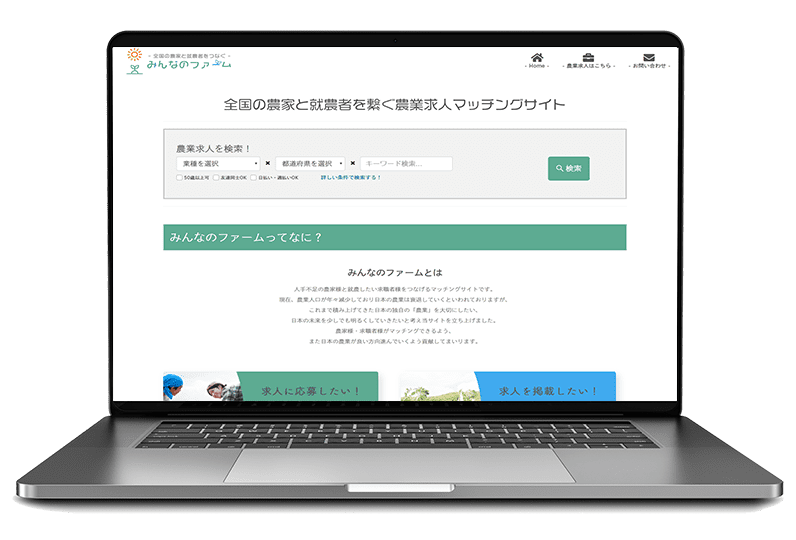
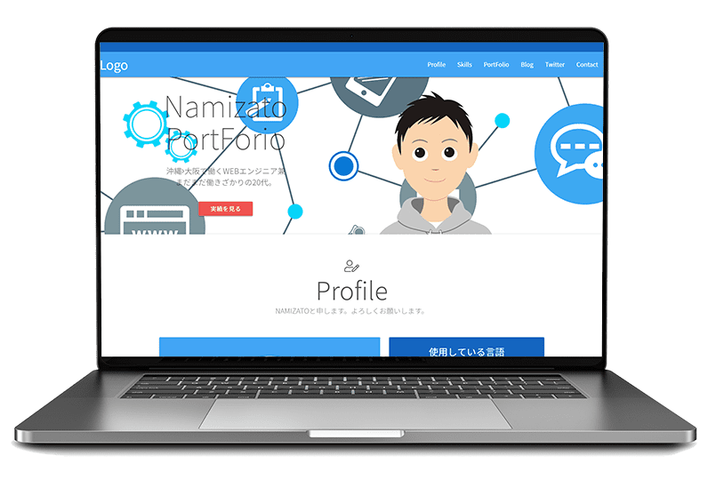

PortForio
これまでの制作実績

PortFolio: No.01
農業求人マッチングサイト
| URL | https://minna.farm |
|---|---|
| 制作時間 | 2017年7月～12月 |
| 説明 |
農業専門求人サイトを自社サービスとして 運営することになり、勉強の一環で一人で 制作することになりました。 WEBサイトを作ること自体が始めてで、 殆ど分からない事ばかりでしたが、 自分なりに本を読んだり、ネットの記事を 参考にしたりしました。 それでも分からない事があれば上司に質問 して解決することを心掛けていました。 最初の1ヶ月はサーバー設定の基本、 2～3ヶ月目はHTML/CSS/Bootstrap 4～5ヶ月目はPHP/CakePHP3/MySQLなど フェーズ分けをして、勉強に取り組み制作しました。 求人を検索して問い合わせる。といった 簡易的なサイトですが、管理画面上から 求人情報を登録/編集/削除など一般的な CMSとしての機能を実装しています。 |
| 苦労した点 |
さくらVPSの初期設定（SSH/LAMP環境の構築/SSL化/ドメイン取得） MVCの概念/MySQL/Bootstrap全て未経験 でしたので理解出来るまで時間がかかりました。 |
| 成長した点 |
一から制作することができたので、WEBサイトの大まかな仕組みを 知ることができたこと、自分で考えて作って試してみる。 駄目なら別の方法を考えて試す。といった考え方が身に付きました。 |
| 使用言語 | HTML5CSS3jQueryBootstrap3CakePHP3SmartyMySQL |

PortFolio: No.02
AIチャットツール（管理画面）
| URL | 非公開 |
|---|---|
| 制作時間 | 2018年1月～2月 |
| 説明 |
AIチャットツールの管理画面の作成。 主に管理画面のフロントエンドを担当 画面構成など全て自分で考えてモックを 作成し、それを元にコーディングしました。 フロントエンドはコーディングだけではなく、 Smartyを使ってPHPも書きながら作成。 その他にもログイン画面やページング、ソート機能 検索機能など一部バックエンド制作にも携わりました。 |
| 苦労した点 |
画面構成が決まっていなかったので、 どういう構成なら使いやすい管理画面にできるか 考えながら作成した点。 また、得意でなかったjQueryを多く 使用しないといけなかったため、 学習に苦労しました。 |
| 成長した点 |
これまで一人で作成していため、 チームでアジャイル開発を経験できたこと。 プログラムは学習したjQueryを書いているうちに 以前よりjQueryがスキルアップできたことと、 ソートやページングなどCakePHPのコンポートを使えることができた。 |
| 使用言語 | HTML5CSS3jQueryChart.jsBootstrap3CakePHP3SmartyMySQL |
PortFolio: No.03
e-ラーニング（JSONファイルの修正）
| URL | 非公開 |
|---|---|
| 制作時間 | 2018年2月～4月 |
| 説明 |
クライアントが自社サービスとして展開している e-ラーニングの講義動画に渡すデータの JSONファイルを修正するという案件。 新規のクライアントなため、作業よりも 密なディレクションが重要となる案件でした。 NDAの締結、見積書の作成、スケジュール調整、 テスト項目の作成、納品まで一貫して1人で行いました。 納品後にクライアント先の交流会に招待して頂き、 ディレクションや納品物の質を高く評価して頂きました。 |
| 苦労した点 |
初めて社外のクライアントとの仕事だったので、 相手に確認することが多くなってしまったこと。 自社システムの操作方法を覚えるのに時間を要したこと。 |
| 成長した点 |
1人でディレクション、スケジュール調整ができた。 疑問点など早期に質問することで、クライアントから 評価を得れたこと。 今回の業務とは関係ない部分でエラーが出ていたのを クライアントに報告。簡単なエラー内容だったため、 助言して、無事に解決することができた。 |
| 使用言語 | JSON |

PortFolio: No.04
ポートフォリオ
| URL | http://namizatop.sakura.ne.jp |
|---|---|
| 制作時間 | 5日程度 |
| 説明 |
今回のWEBサイト、アプリのように直感的に操作 できるようにUI/UXも考慮して作成しています。 それだけではなく、自身の言語レベルをスキルバー を用いて視覚的に分かりやすく意識しました。 また、インターネットに公開するために レンタルサーバーも用意しました。 |
| 苦労した点 |
休みもろくに取れない忙しい状況の中での ポートフォリオ制作だったため、 ちゃんとした制作時間をとれなかったこと。 エンジニアのポートフォリオがほぼ皆無だったため、 参考サイトがなく、考えながら作成した点。 |
| 成長した点 |
忙しくてもレンタルサーバーの使用/SNSボタン連携/ Materializeの使い方など学習をしながら |
| 使用言語 | HTML5CSS3jQueryMaterializePHP |
PortFolio: No.05
釣具用品ECサイト
| URL | 非公開 |
|---|---|
| 制作時間 | 2018年7月～9月現在 |
| 説明 |
中規模～大規模のECサイトリニューアル案件。 OSSプラットフォームEC-CUBE3を提案し、 見積書を作成後に受注決定。 主にプラグインのカスタマイズやユーザーインタフェース部分を担当。 デザインに沿ってコーディング、Twigで動的に作り込み、 またプラグインやコアのカスタマイズなどを行っています。 本来3～4人で担当するはずの案件を2人で作業しているため、 休み返上で働いています。（汗） |
| 苦労した点 |
EC-CUBE3を使用したことがない状態での 見積書作成だったため、調査にかなりの時間を要した。 EC-CUBE3が採用しているSymfony2のフォームの扱いが 独特で慣れまで時間が掛かった。 ユーザーインタフェース部分は一人で開発を行っているので、 分からないことは調べるしかない状態。 |
| 成長した点 |
EC-CUBE3を簡単に理解し、Symfony2を使えるようになったこと。 今回は管理上、物流にも大きく関わるのでECサイトの仕組み だけではなく、物流の勉強にもなった。 |
| 使用言語 | HTML5CSS3jQueryBootstrapSymfony2TwigMySQL |